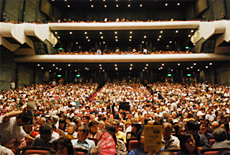
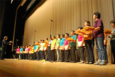
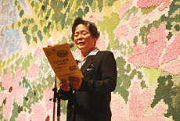

さよなら原発 埼玉県民集会が開催されました
- 【日 時】
- 10月8日(月)13:30～16:45
- 【場 所】
- さいたま市文化センター 大ホール
- 【参加者】
- 2,800人
- 【司 会】
- 伊藤恭一埼玉県生協会長理事
|  | |
| 3階まで埋め尽くした会場の様子 | |
≪さよなら原発埼玉県民集会の概要≫
1．アトラクション「制服向上委員会」
2．発起人と呼びかけ人の紹介
（1）発起人
肥田舜太郎氏(しらさぎ会名誉会長・医師)
田中熙巳氏(しらさぎ会会長)
柿沼トミ子氏(埼玉県地域婦人会連合会会長)
伊藤恭一氏(埼玉県生活協同組合連合会会長理事)
吉野良司氏(原水爆禁止埼玉県協議会理事長)
山下弘之氏(埼玉県平和運動センター議長)
（2）呼びかけ人
石井孝幸氏(東埼玉百人委員会代表)
大熊照夫氏(映画監督)、太田蕘氏(東京大学名誉教授)
大場敏明氏(埼玉県保険医協会理事長)、鎌倉孝夫氏(埼玉大学名誉教授)
木下卓氏(市民測定所うらわ実行委員会事務局長)、原道子氏(埼玉YMCA総主事)
小寺隆幸氏(原爆の図 丸木美術館理事長)
白田真希氏(原発さよならデモ＠埼玉運営メンバー)、杉浦公昭氏(東洋大学元教授)
高橋哲哉氏(東京大学教授)、高橋英猛氏(真言宗・住職)
高橋正久氏(さよなら原発越谷連絡会代表)
田島公子氏(越生町長、脱原発をめざす首長会議)
辻浩司氏(ぴーすうぉーくIN春日部代表)、富沢賢治氏(一橋大学名誉教授)
中村梧郎さん氏(前岐阜大学教授)、中山福二氏(埼玉弁護士会元会長)
早崎仁氏(原発さよならデモ＠埼玉運営メンバー)
望月靖彦氏(脱原発スモールアクション代表)
3．講演
- 「内部被ばくと子どもの健康（ビデオ）」
- 肥田舜太郎氏
- 「福島原発事故から学んだこと」
- 井戸川克隆氏
- 「福島原発事故と脱原発運動」
- 鎌田慧氏
| 肥田 舜太郎氏 | 井戸川双葉町長 | 鎌田 慧氏 |
4．合唱と地域で取り組まれている活動報告
|  |  |
| 埼玉合唱団のみなさまによる歌声の披露 | 田島公子越生町長 |
- 田島 公子さん 埼玉県越生町長、脱原発をめざす首長会議
- 矢島 一美さん つくし保育園（三郷市）保育士
近沢 梓さん つくし保育園（三郷市）保育士 - 高橋 慶さん 埼玉西協同病院看護師
- 室原 久美さん 個人、福島県相馬市のボランティア活動で知ったこと
- 玉井 鈴代さん 新日本婦人の会埼玉県本部
- 白田 真希さん 原発さよならデモ＠さいたま
- 高山 恒明さん 福島県から埼玉に避難をされている方
- 栗城 英子さん さよなら原発1000万人署名4市(朝霞･和光･新座･志木)連絡会賛同人
- 伊藤 千亜さん 放射能から子どもたちを守る会・入間北会員
5．決議(別紙参照)と閉会あいさつ
|  | |
| 決議を読み上げる森県婦連副会長 | 閉会あいさつをするしらさぎ会田中会長 |